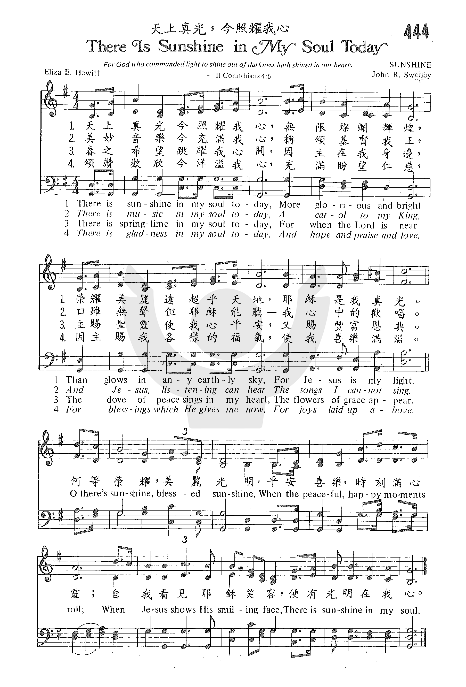

| |
生命聖詩 - 422 榮光照我心 (Sunshine in My Soul)
|
|
1 There is sunshine in my soul today,
More glorious and bright
Than glows in any earthly sky,
For Jesus is my light.
Refrain:
O there’s sunshine, blessed sunshine,
When the peaceful happy moments roll:
When Jesus shows His smiling face,
There is sunshine in the soul.
2 There is music in my soul today,
A carol to my King,
And Jesus, listening, can hear
The songs I cannot sing. [Refrain]
3 There is springtime in my soul today,
For when the Lord is near,
The dove of peace sings in my heart,
The flowers of grace appear. [Refrain]
4 There is gladness in my soul today,
And hope and praise and love
For blessings which He gives me now,
For joys "laid up" above. [Refrain]
Source: African Methodist
Episcopal Church Hymnal #469
|
今有榮光照在我心中，極大榮耀輝煌，
世上光輝不能比較，耶穌是我榮光。
今有音樂充滿我心中，向我君王頌揚，
耶穌喜聽我的歌聲，雖我不善歌唱。
今有歡樂充滿我心中，因主近我身旁，
平安聖靈在我心內，黑典之花開放。
今有快樂充滿我心中，並有盼望仁慈，
耶穌賜我恩福無量，喜樂永恆不止。
副歌：
快樂榮光，有福榮光，快樂平安充滿我心房，
當主耶穌西露笑容，就有光照我心中。
|
|
https://www.zanmeishige.com/tab/26019.html?songbook=1&index=444
 |
|
https://www.churchofjesuschrist.org/music/library/hymns/there-is-sunshine-in-my-soul-today?lang=zho
https://hymnary.org/hymn/CEL1997/page/713 |
| |
|
讚美詩源考小組策劃 陳美恩撰稿
曲調名：SUNSHINE，8.6.8.6 複
作詞者：Eliza E. Hewitt, 1851-1920
作曲者：John Robson Sweney, 1837-1899
第一節譜例：今有真光照在我心房，極大榮耀、輝煌；
There is sunshine in my soul today, More glorious and bright
作詞者曉宜（Eliza E. Hewitt, 1851-1920），另有一筆名為Lidie H.
Edmunds，作品也常刊登於《主日學輔助教材》（Sunday-school Helps）中。2
曉宜自學校畢業後即開始執教，後來受到脊椎問題所困，一直無法完全復原，只好中斷教書生涯。有一次，她的背部嚴重受傷，經過六個月期間以石膏固定，在一個溫暖的春天之後，她終於稍有進步而能夠前往公園散步片刻，些許的復原使她心中喜樂不已，因而寫下這首歌詞。
《哥林多後書》四章6-18節，是受脊椎之苦的曉宜非常能體會的──
那吩咐光從黑暗裡照出來的神，已經照在我們心裡，叫我們得知神榮耀的光顯在耶穌基督的面上。我們有這寶貝放在瓦器裡，要顯明這莫大的能力是出於神，不是出於我們。我們四面受敵，卻不被困住；心裡作難，卻不至失望；遭逼迫，卻不被丟棄；打倒了，卻不至死亡。
身上常帶著耶穌的死，使耶穌的生也顯明在我們身上。……所以，我們不喪膽。外體雖然毀壞，內心卻一天新似一天。我們這至暫至輕的苦楚，要為我們成就極重無比、永遠的榮耀。原來我們不是顧念所見的，乃是顧念所不見的；因為所見的是暫時的，所不見的是永遠的。
本詩作曲者斯溫尼（John Robson Sweney, 1837-1899）美國人，是早期福音詩歌運動中非常有影響力的音樂家。3
註1：曲調名──SUNSHINE，出自原文首句歌詞「There is sunshine」。
註2：本詩作詞者與18首相同，其相關介紹請參見《聖靈》月刊2007年6月號（357期）。
註3：本詩作曲者與62首相同，其相關介紹請參見《聖靈》月刊2008年7月號（370期）。 |
|
http://www.hymncompanions.org/Apr/26/stream.php
這首詩的作者是希慧德（Eliza E. Hewitt, 1851-1920）,
她出生在美國賓州費城，畢業於費城女子師範，代表畢業班致詞。她在公立學校教書時，被一頑劣的男生以石板擊中背部，脊椎受傷陷於半癱瘓，她被迫辭職，臥病在床。
在這休養期間，她與主親近，研讀聖經真理，藉文字與他人分享她的感受，以教會有關的題材作詩。著名的盲詩人芬妮克羅斯比是她的好友，她們時常討論聖詩的寫作。她著名的聖詩有「將心給我」（Give
Me Thy Heart）， 「天上真光，今照耀我心」（There Is Sunshine in My
Soul Today），「都到天庭」（When We All Get to Heaven）等。
1887年，希慧德的健康逐漸恢復，她寫下了這首詩。希慧德一生有三愛：愛主，愛兒童，愛教主日學。
許多年來，她在孤兒院擔任主日學主任，並在教會終身當主日學初級主任。
|
Short Name: |
E. E. Hewitt |
|
Full Name: |
Hewitt, E. E. (Eliza Edmunds), 1851-1920 |
|
Birth Year: |
1851 |
|
Death Year: |
1920 |
Pseudonym: Lidie H.
Edmunds.

Eliza Edmunds Hewitt was
born in Philadelphia 28 June 1851. She was educated in the public schools and
after graduation from high school became a teacher. However, she developed a
spinal malady which cut short her career and made her a shut-in for many
years. During her convalescence, she studied English literature. She felt a
need to be useful to her church and began writing poems for the primary
department. she went on to teach Sunday school, take an active part in the
Philadelphia Elementary Union and become Superintendent of the primary
department of Calvin Presbyterian Church.
Dianne Shapiro, from
"The Singers and Their Songs: sketches of living gospel hymn writers" by
Charles Hutchinson Gabriel (Chicago: The Rodeheaver Company, 1916)
|
Short Name: |
John R. Sweney |
|
Full Name: |
Sweney, John R., 1837-1899 |
|
Birth Year: |
1837 |
|
Death Year: |
1899 |
John R. Sweney (1837-1899)

was born in West Chester,
Pennsylvania, and exhibited musical abilities at an early age. At nineteen
he was studying with a German music teacher, leading a choir and glee club,
and performing at children’s entertainments. By twenty-two he was teaching
at a school in Dover, Delaware. Soon thereafter, he was put in charge of the
band of the Third Delaware Regiment of the Union Army for the duration of
the Civil War. After the war, he became Professor of Music at the
Pennsylvania Military Academy, and director of Sweney’s Cornet Band. He
eventually earned Bachelor and Doctor of Music degrees at the Academy.
Sweney began composing
church music in 1871 and became well-known as a leader of large
congregations. His appreciators stated “Sweney knows how to make a
congregation sing” and “He had great power in arousing multitudes.” He also
became director of music for a large Sunday school at the Bethany
Presbyterian Church in Philadelphia of which John Wanamaker was
superintendent (Wanamaker was the founder of the first major department
store in Philadelphia). In addition to his prolific output of hymn melodies
and other compositions, Sweney edited or co-edited about sixty song
collections, many in collaboration with William J. Kirkpatrick. Sweney died
on April 10, 1899, and his memorial was widely attended and included a
eulogy by Wanamaker.
Joe Hickerson from
"Joe's Jottings #9" used by permission
"SUNSHINE IN MY SOUL"
"For God, who commanded the light to shine…hath shined in our hearts…" (2
Cor. 4.6)
https://hymnstudiesblog.wordpress.com/2009/06/01/quotsunshine-in-my-soulquot/
INTRO.:
A gospel song which speaks of the light that God makes possible to shine in our
hearts is "Sunshine in My Soul" (#425 in Hymns
for Worship Revised and #575 in Sacred
Selections for the Church). The text was written by Eliza Edmunds Hewitt
(1851-1920). A teacher in Philadelphia, PA, she was attempting to correct an
unruly student who struck her across the back with a heavy slate. After she had
spent six months in a cast recovering from this injury, her physician at last
permitted her to go for a short walk in a nearby park on a warm spring day. Her
heart overflowed with joy and after her walk, she produced this song, among her
first. The tune (Sunshine) was composed by John Robson Sweney (1837-1899). The
song was published in the 1887 songbook Glad
Hallelujahs edited by Sweney and William James Kirkpatrick. The original
began each stanza with "There’s sunshine" but many books have changed it to
"There is sunshine." Later, Mrs. Hewitt authored many more songs, including "A
Blessing in Prayer," "For Christ and the Church," "Give Me Thy Heart," "More
About Jesus," "Stepping In The Light," "When We All Get to Heaven," "Who Will
Follow Jesus?", and "Will There Be Any Stars in My Crown?"
Among hymnbooks published by members of the Lord’s church during the
twentieth century for use in churches of Christ, "Sunshine in My Soul" appeared
in the 1937 Great
Songs of the Church No. 2 edited by E. L. Jorgenson; the 1948 Christian
Hymns No. 2 and the 1966 Christian
Hymns No. 3 both edited by L. O. Sanderson; the 1963 Christian
Hymnal edited by J. Nelson Slater; and the 1963 Abiding
Hymns edited by Robert C. Welch. Today it may be found in the 1971 Songs
of the Church, the 1990 Songs
of the Church 21st C. Ed., and the 1994 Songs
of Faith and Praise all edited by Alton H. Howard; the 1978/1983 Church
Gospel Songs and Hymns edited by V. E. Howard; the 1986 Great
Songs Revised edited by Forrest M. McCann; and the 1992 Praise
for the Lord edited by John P. Wiegand; in addition to Hymns
for Worship, Sacred
Selections, and the 2007 Sacred
Songs of the Church edited by William D. Jeffcoat.
This song overflows with joy that results from God’s light in our lives.
I. Stanza 1 says that God causes sunshine in our souls
"There’s sunshine in my soul today, More glorious and bright
Than glows in any earthly sky, For Jesus is my light."
A. God created the physical sun that gives light to the earth: Gen. 1.14-19
B. However, the idea of sunshine here is used to represent the warmth of God’s
love that can fill the heart: Rom. 5.5
C. The One who brings this light into our lives is Jesus because He is the
light of the world: Jn. 8.12
II. Stanza 2 says that God causes music in our souls
"There’s music in my soul today, A carol to my King,
And Jesus, listening, can hear The songs I cannot sing."
A. This music is an expression of the joy and gladness that is in our hearts:
Jas. 5.13
B. Jesus listens to and hears such songs because they are being sung unto the
Lord: Col. 3.16
C. However, even when our voices may not be able to express what is in our
hearts, Jesus can still hear because He knows what is in us: Jn. 2.24-25
III. Stanza 3 says that God causes springtime in our souls
"There’s springtime in my soul today, For when the Lord is near,
The dove of peace sings in my heart, The flowers of grace appear."
A. Springtime, referred to in the Bible as seedtime, is a time of renewal and
growth: Gen. 8.22
B. Thus, it is used in the song as a symbol of spiritual renewal and growth
with peace and joy; the dove has been associated with peace ever since the time
of Noah: Gen. 8.8-12
C. Just as flowers are sources of beauty and enjoyment, so God’s grace is a
source of spiritual beauty and enjoyment to our souls: Acts 20.32
IV. Stanza 4 says that God causes gladness in our souls
"There’s gladness in my soul today, And hope and praise and love,
For blessing which He gives me now, For joys laid up above."
A. Whatever true gladness can accompany our lives, God is the ultimate source
of it because He gives us hope and praise and love: Ps. 4.7
B. We can be glad for the blessings which He gives us here, not only the
material blessings of life but the spiritual blessings in Christ: Eph. 1.3
C. And beyond this, we can be glad for the joys that He has laid up for us
above in heaven: Col. 1.5
CONCL.:
The chorus continues to express the peace and joy that the light of Christ
brings:
"O there’s sunshine, blessed sunshine, While the peaceful, happy moments roll;
When Jesus shows His smiling face, There is sunshine in my soul."
There is much in this life to bring sadness and sorrow, but as long as I allow
Jesus Christ to be in control of my heart, I can truly say that there is
"Sunshine in My Soul."
Devotion for the Week of October 8, 2017 - The Story Behind The Hymn - SUNSHINE
IN MY SOUL
Submitted by Alan on
October 9, 2017 - 06:44
https://www.rmjc.org/node/632
The
Story Behind The Hymn - SUNSHINE IN MY SOUL
Psalm 92:1 (KJV), “I
will be glad and rejoice in thee: I will sing praise to thy name,
O thou most High.”
In 1851 Eliza Edmunds Hewitt was born, and grew to be
valedictorian of her class and a school teacher in Pennsylvania.
At some point in her teaching career a student struck her on the
back with a piece of heavy slate. This left Eliza in a heavy cast
for months, confined to her room.
During this time of painful confinement, Eliza was determined not
to be bitter, and started writing hymns. Many of them were praise
hymns, such as: Stepping in the Light, Singing I Go, Victory in
Jesus and many more.
When she was able to go outside for the first time on a spring
day, she enjoyed the warmth of the sun. Returning to her room
with a joyful heart, she wrote the hymn Sunshine in my Soul Today.
O there’s sunshine, blessed sunshine,
When the peaceful, happy moments roll;
When Jesus shows His smiling face,
There is sunshine in my soul.
Eliza did improve but suffered health problems for the rest of her
life. She went on to do work in various Sunday School capacities,
a passion of hers. At one time she had a class numbering 200.
In researching this incredible woman of faith, it was very
surprising to learn Eliza was a great friend to blind hymn writer
Fanny Crosby. Here are a couple verses of a poem Eliza wrote and
read at Fanny’s funeral.
And when you pass from time away
To meet your Lord and King,
In heaven you’ll meet ten thousand souls,
That you have taught to sing.A few more years to sing the song
Of our Redeemer’s love;
Then by His grace both you and I
Shall sing His praise above.
God has a plan for each and every one of us (Psalm 29:11 (KJV), “The
LORD will give strength unto his people; the LORD will bless his
people with peace.”, and despite the difficult
circumstances that we face or have faced, He can make something
beautiful from ashes. Eliza Hewitt is remembered for the great
hymns that have brought comfort to thousands if not millions of
people. Had she not suffered this terrible injury, these hymns
that speak to our hearts, would not have been written.
How fast the years are rolling on—
We cannot stay their flight;
The summer sun is going down,
And soon will come the night.
But you, dear friend, need fear no ill,
Your path shines bright and clear;
You know the Way, the Truth, the Life,
To you He’s ever near.
Two verses of a poem written for
Fanny Crosby’s funeral by Eliza Hewitt